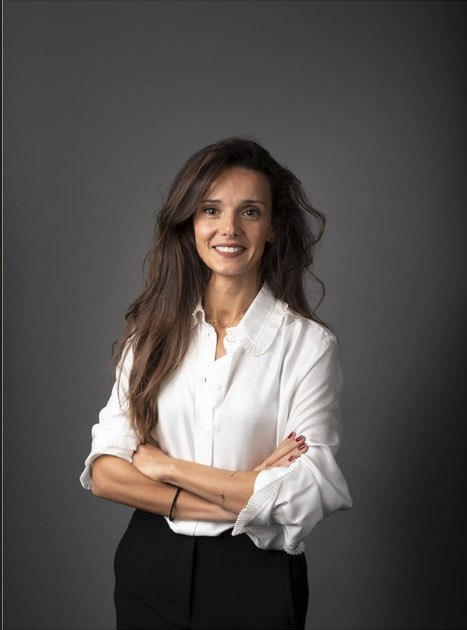

Sabrina Henocque Chiche
Avocate spécialisée en droit social et contentieux URSSAF.
Fondatrice d'ACOMPIA, solution de conformité URSSAF incubée par le Barreau de Paris.
Parcours
Avocate au Barreau de Paris depuis plus de 10 ans, Sabrina Henocque Chiche concentre sa pratique sur le droit social et le contentieux URSSAF auprès d'entreprises de 50 à 1 000 salariés. Elle conseille ses clients à chaque étape de la relation avec l'URSSAF : audit préventif, accompagnement en cours de contrôle, contestation devant la commission de recours amiable et contentieux devant le pôle social du tribunal judiciaire.
En 2026, elle fonde ACOMPIA, solution de conformité URSSAF qui croise sa pratique juridique et l'intelligence artificielle pour permettre aux entreprises de sécuriser leur exposition en continu. Le projet est incubé par le Barreau de Paris.
Domaines d'expertise
- Avantages en nature (véhicule, logement, nouvelles technologies)
- Frais professionnels et indemnités kilométriques
- Protection sociale complémentaire (mutuelle, prévoyance, retraite supplémentaire)
- Temps de travail, forfait jours, heures supplémentaires
- Ruptures conventionnelles et transactions
- Réduction générale dégressive unique (RGDU)
- Versement mobilité
- Contentieux de la sécurité sociale (pôle social du TJ)